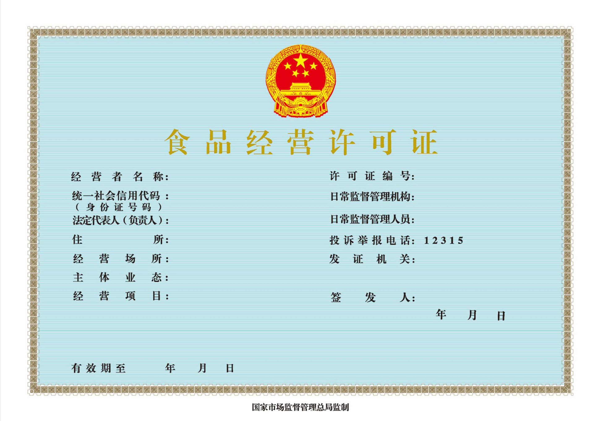
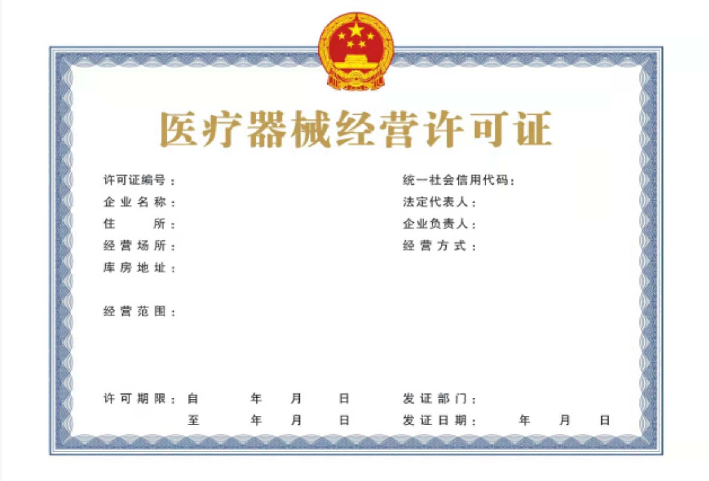
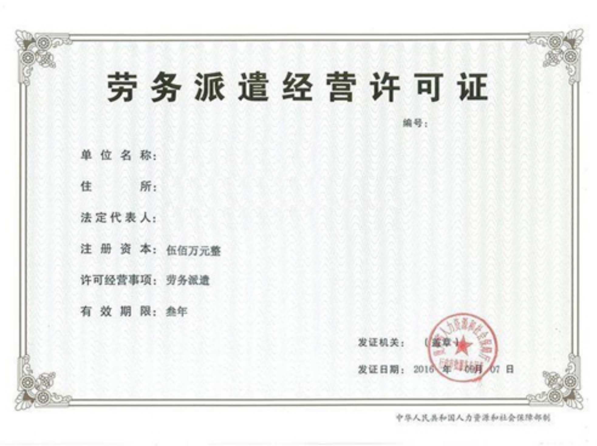
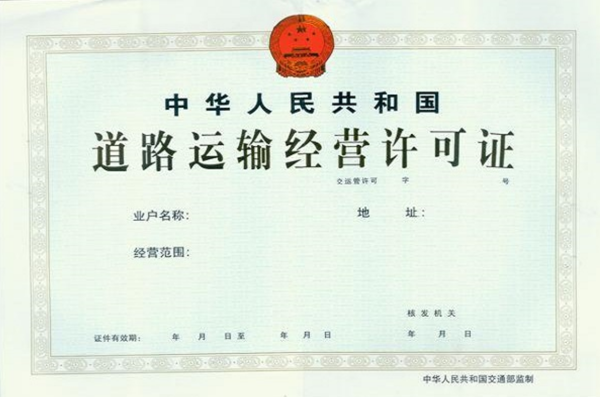
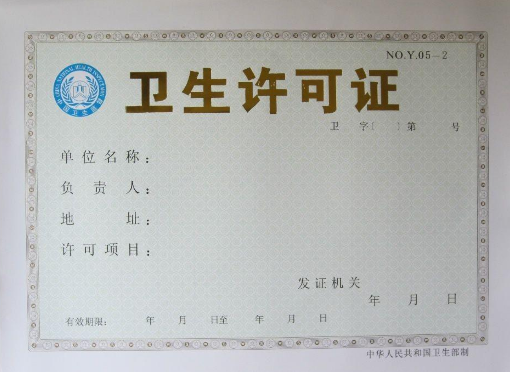
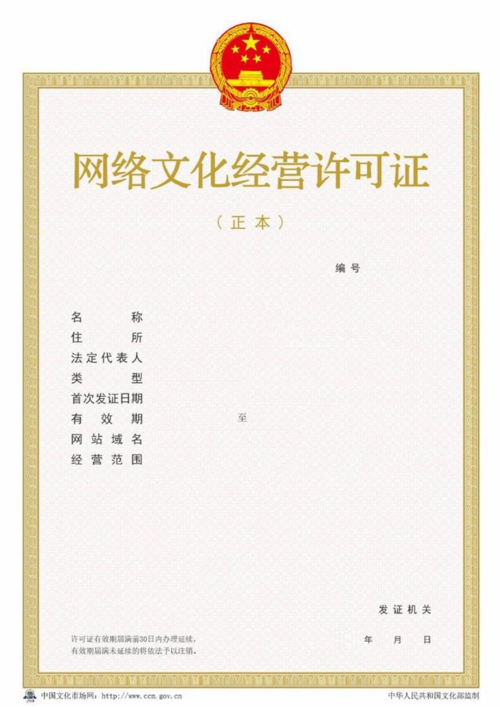
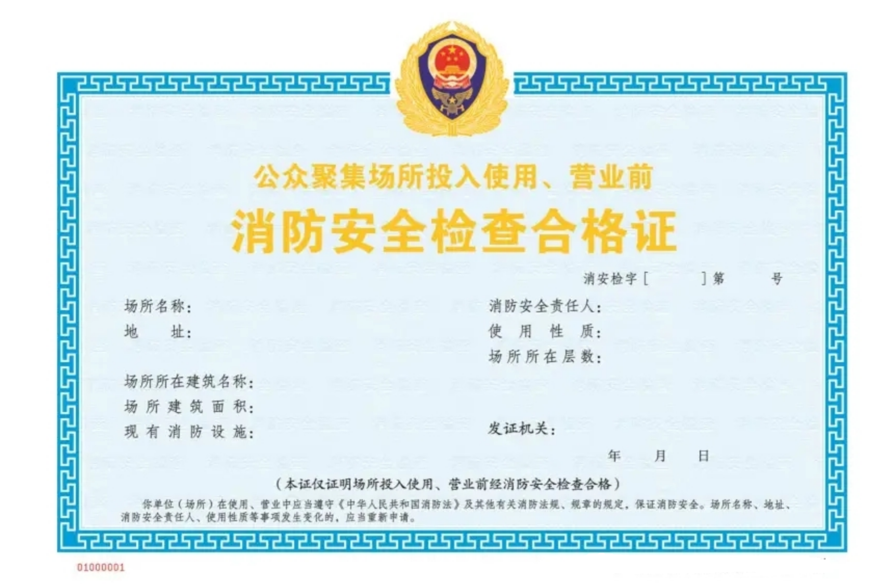
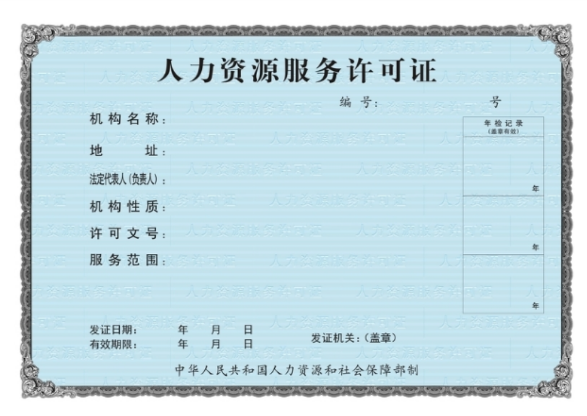
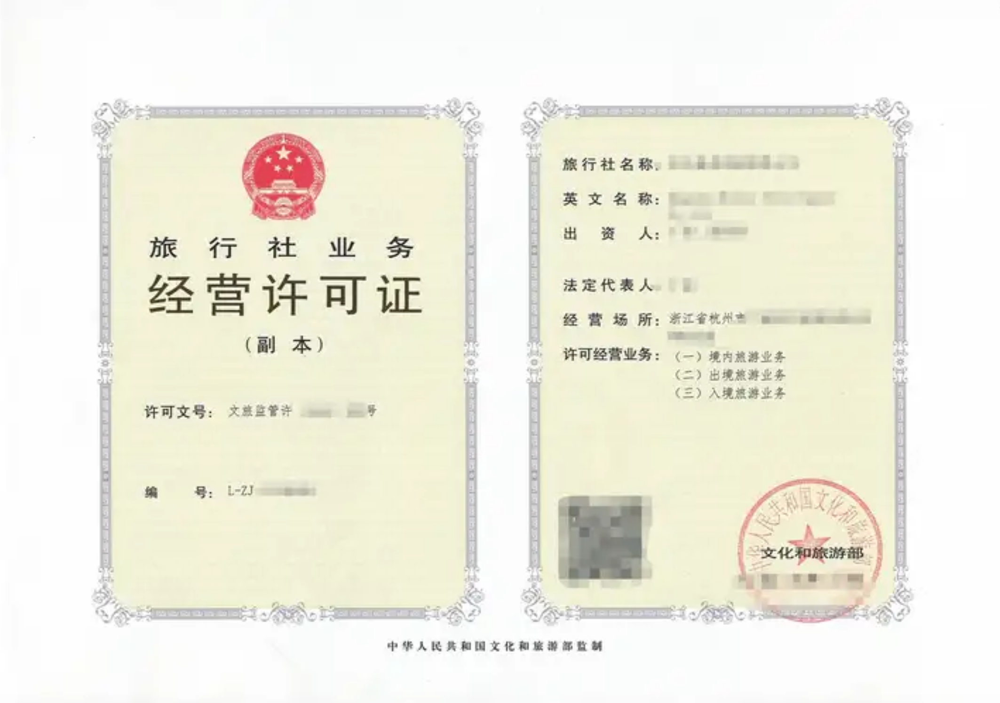

核心证照资质
以下为泰州市姜堰区新宸企业服务的核心资质证照，合规经营，正规可查。

营业执照

食品经营许可证
公司专业资质

代理记账许可证

中国总会计师协会
可代办经营许可证展示
以下为新宸企业服务为姜堰及泰州各区域企业可代办的各类经营许可证示意图。每张证照下方标注对应证照全称。

医疗器械经营许可证

劳务派遣经营许可证

道路运输经营许可证

卫生许可证

网络文化经营许可证

消防安全检查合格证

人力资源服务许可证

旅行社业务经营许可证
证照代办常见问题
问：姜堰代办食品经营许可证需要多长时间？能加急吗？
答：通常为15到20个工作日。新宸企业服务提供加急服务，协助企业提前整改场地、预审材料，最大限度缩短审批时间。
问：姜堰劳务派遣许可证代办对新公司有什么要求？
答：要求注册资本实缴200万以上，有固定经营场所和相应管理制度。新宸企业服务可协助准备全套材料，从公司注册到许可证办理全程代办。
问：姜堰进出口权代办包含哪些环节？
答：包含对外贸易经营者备案、海关报关单位注册登记、电子口岸IC卡申领、外汇管理局名录登记、出口退税备案等环节。新宸企业服务一站式办齐。
问：姜堰危化品经营许可证代办难度大吗？
答：涉及安全评价、场地合规、应急预案等多个专业环节。新宸企业服务有姜堰危化品许可证代办经验，熟悉应急管理部门的审批要点。
问：新宸企业服务除了代办证照，还能提供代理记账吗？
答：可以。新宸企业服务是姜堰一站式企业服务平台，还提供代办注册公司、代理记账、记账报税、公司变更注销等全生命周期服务。